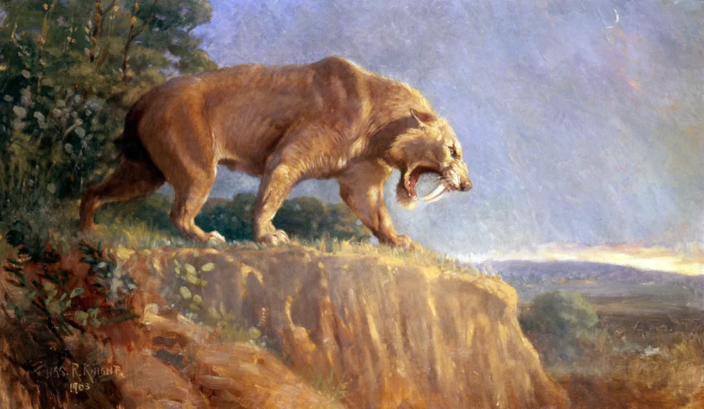
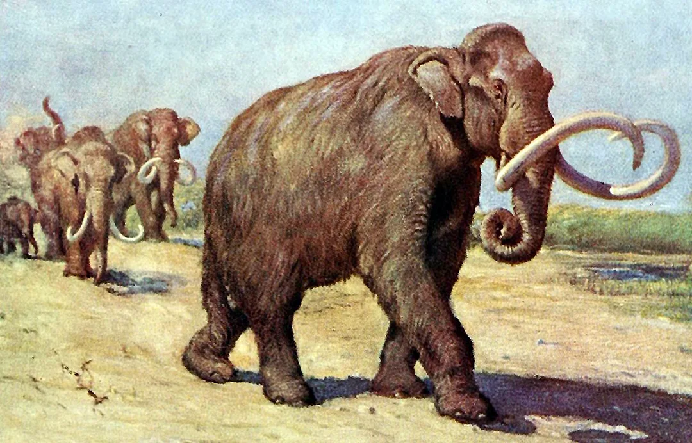
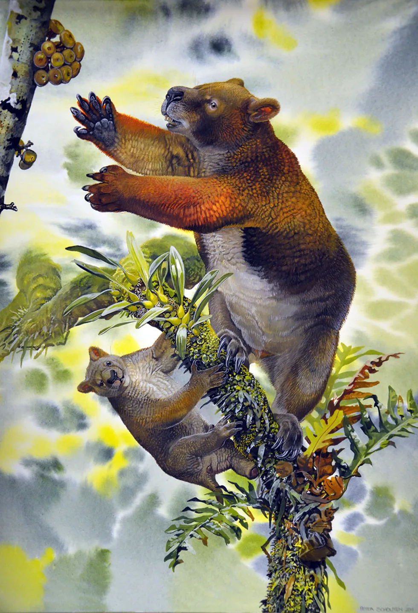
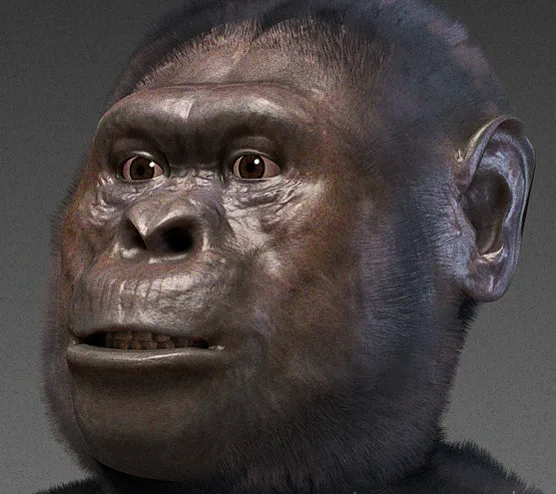

Smilodon A saber-toothed cat, not a tiger. The Florida Museum says more than 2,000 skulls of Smilodon fatalis come from La Brea, and it dates the species to about 700,000 to 11,000 years ago. The La Brea museum says its collections represent the last 50,000 years of southern California life. That span is the local collection, not the whole life of the species.
Life restoration. Charles Robert Knight, public domain, via Wikimedia Commons. Artist’s illustration. File page · Fossil. TheUltimateGrass, CC0, via Wikimedia Commons. The original photograph is 4032 × 3024 pixels. This page serves that full width, plus 2560 and 1600, not enlarged. File page · Source: Florida Museum species page, which says more than 2,000 skulls, and the La Brea Tar Pits museum. · Source: La Brea Tar Pits & Museum: mammal collections, the last 50,000 years.

Waco mammoths A nursery herd of Columbian mammoths in Texas. The National Park Service dates that herd’s death to between 65,000 and 72,000 years ago. The timeline mark is 68,000 years, inside that range, not a single measured year.
Life restoration. Charles Robert Knight, public domain, via Wikimedia Commons. Artist’s concept. File page · Fossil. Larry D. Moore, CC BY 4.0, via Wikimedia Commons. The original file is 2168 pixels wide. This page serves 1920 pixels wide, not enlarged. File page · Source: National Park Service: the Waco nursery herd died between 65,000 and 72,000 years ago. · Source: National Park Service: dating methods for the same herd.

Nimbadon A wombat-like marsupial from Riversleigh. UNESCO dates those mammals to about 30 to 10 million years ago. Black and others, 2012, place Nimbadon lavarackorum in a middle Miocene cave and read the skeleton as a climber. The picture of a mother and young in a tree is that paper’s restoration, not a photograph. The timeline mark is 15 million years, inside the UNESCO span, not a single measured year.
Life restoration. Peter Schouten, CC BY 2.5, via Wikimedia Commons. Artist’s illustration. File page · Fossil. Black KH, Camens AB, Archer M, Hand SJ, CC BY 2.5, via Wikimedia Commons. The original file is 1654 pixels wide. This page serves 1654 pixels wide. File page · Source: Black, Camens, Archer, and Hand, 2012, PLOS ONE. UNESCO is the second link. · Source: UNESCO World Heritage: Australian Fossil Mammal Sites, Riversleigh mammals about 30 to 10 million years ago.

Lucy Australopithecus afarensis from Ethiopia, about 3.2 million years ago.
Life restoration. Cicero Moraes, CC BY-SA 4.0, via Wikimedia Commons. Artist’s concept. File page · Fossil. 120, CC BY 2.5, via Wikimedia Commons. The original file is 1000 pixels wide. This page serves 1000 pixels wide. File page · Source: Smithsonian: Lucy (AL 288-1). Linked from this site’s coin.
La Brea Tar Pits Asphalt trapped Ice Age animals in Los Angeles. The La Brea museum says its collections represent the last 50,000 years of southern California life. This note does not turn that span into an ending at 10,000 years.
Life restoration. Charles Robert Knight, public domain, via Wikimedia Commons. Artist’s illustration. File page · Fossil. TheUltimateGrass, CC0, via Wikimedia Commons. The original file is 4032 pixels wide. This page serves 1920 pixels wide, not enlarged. File page · Source: La Brea Tar Pits & Museum. Linked from this site’s coin.
Darwinius An early primate from a volcanic lake in Germany, about 48 million years ago. The picture is the fossil. This card has no living restoration.
Jens L. Franzen, Philip D. Gingerich, Jörg Habersetzer1, Jørn H. Hurum, Wighart von Koenigswald, B. Holly Smith, CC BY-SA 2.5, via Wikimedia Commons. The original file is 1118 pixels wide. This page serves 1118 pixels wide. File page · Source: Messel Pit visitor site. Linked from this site’s coin.
Wadi Al-Hitan Whales that still had hind legs, from the Late Eocene of Egypt, about 40 to 37 million years ago. The picture is a fossil jaw. This card has no living restoration.
Tom Horton from Shanghai, China, CC BY-SA 2.0, via Wikimedia Commons. The original file is 2736 pixels wide. This page serves 1920 pixels wide, not enlarged. File page · Source: UNESCO World Heritage: Wadi Al-Hitan (Whale Valley). Linked from this site’s coin.